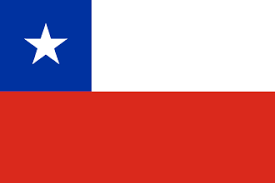
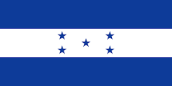
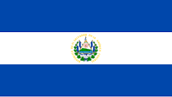
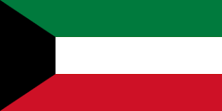
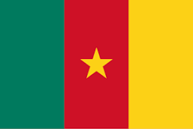
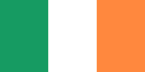

¿De qué se trató el Mundial de 1982?
La Copa Mundial de la FIFA 1982 fue la duodécima edición del torneo y se disputó en España entre el 13 de junio y el 11 de julio de 1982. Representó el regreso de la máxima cita futbolística a suelo europeo tras ocho años, consolidándose como un evento de masificación sin precedentes y una gran fiesta de apertura cultural para el país anfitrión, que transitaba la consolidación de su democracia.
El campeonato estuvo marcado por hitos institucionales de gran relevancia histórica. Se continuó utilizando el trofeo estrenado en 1974: la Copa Mundial de la FIFA, diseñada por Silvio Gazzaniga. A nivel deportivo, el certamen asombró al planeta con la irrupción de selecciones debutantes de diversos continentes y el renacer del fútbol vistoso y efectivo de Italia. En el plano organizativo se modificó radicalmente el formato clásico, expandiendo por primera vez el cupo a 24 selecciones participantes, e implementando un complejo sistema de tres fases que incluyó una inédita segunda ronda de cuatro triangulares.
España organizó un certamen de altísimo nivel logístico, disponiendo de una cantidad récord de sedes y estadios completamente modernizados. En el plano futbolístico, a pesar del favoritismo del lírico Brasil de Zico y Sócrates, fue el combinado de Italia el que demostró mayor contundencia, oficio y solidez en los momentos decisivos. En la gran final, disputada en el majestuoso Estadio Santiago Bernabéu de Madrid ante unos 90.000 espectadores, Italia derrotó a Alemania Federal por 3-1, gracias a una actuación consagratoria de Paolo Rossi.
Informacion que tenes que saber
Info general
- Pais Anfitrion: España
- Fecha de Inicio:
13 de Junio de 1982
(13/06/1982) - Fecha de Finalizacion:
11 de Julio de 1982
(11/07/1982) - Duracion: 28 dias
- Organizador: FIFA
- Edicion: XII
Estadisticas
- Partidos jugados: 52
- Goles anotados: 146
- Promedio de gol: 2,81
- Máximo goleador:
Paolo Rossi
(6 goles) - Final:
Italia 3 - 1 Alemania Federal
info de la Ciudad
- Ciudades Sede: 14
- Selecciones Participantes: 24
- Estadios Utilizados: 17
- Estadio Principal:
Estadio Santiago Bernabéu
Podio
| Posicion | Seleccion | Bandera |
|---|---|---|
| 1º Puesto | Italia |  |
| 2º Puesto | Alemania Federal |  |
| 3º Puesto | Polonia |  |
| 4º Puesto | Francia |  |
(Nota: El tercer puesto se definió en un partido entre Polonia y Francia, escoltas de sus respectivos triangulares de la segunda fase, ya que el formato de 1982 contemplaba semifinales tradicionales previas a la gran final).
Historia completa de la Copa Mundial de la FIFA 1982
La Copa Mundial de la FIFA de 1982 fue la duodécima edición del torneo y se disputó en España entre el 13 de junio y el 11 de julio de 1982. La FIFA otorgó la sede a España durante su congreso de 1966 en Londres. El certamen se organizó bajo estrictas medidas de control debido a los remanentes de inestabilidad política de la época y la amenaza terrorista interna, aunque se desarrolló en un ambiente predominantemente pacífico y festivo.
La fase de clasificación, que repartía 24 boletos, dejó fuera a equipos de peso como los Países Bajos (subcampeones en 1974 y 1978) y a México. En contrapartida, el certamen albergó los debuts absolutos de cinco selecciones: Argelia, Camerún, Honduras, Kuwait y Nueva Zelanda. Argelia protagonizó la primera gran sorpresa histórica al vencer en el debut del grupo a la poderosa Alemania Federal por 2-1.
Desarrollo del torneo
El Mundial comenzó el 13 de junio de 1982. En la primera fase de grupos, el campeón defensor, Argentina, liderado por un joven Diego Maradona en su debut mundialista, cayó 1-0 ante Bélgica en el partido inaugural. Por su parte, Italia avanzó de forma agónica a la segunda ronda sin ganar un solo partido, clasificando por encima de Camerún únicamente por tener un gol más a favor.
En la segunda fase de grupos, Italia revivió de manera espectacular en el Estadio de Sarriá en Barcelona. Comandados por un intratable Paolo Rossi, los italianos derrotaron a la Argentina de Maradona por 2-1 y eliminaron al histórico y ultraofensivo Brasil de Telê Santana por 3-2 en uno de los partidos más memorables de la historia del fútbol. En semifinales, Italia batió a Polonia por 2-0, mientras que Alemania Federal y Francia protagonizaron un duelo dramático en Sevilla que terminó 3-3 en la prórroga y se definió, por primera vez en la historia de los mundiales, en tanda de penaltis, clasificando a los alemanes.
La gran final
La final se jugó el 11 de julio de 1982 en el Estadio Santiago Bernabéu de Madrid ante unos 90.000 espectadores. El primer tiempo estuvo lleno de tensión; el italiano Antonio Cabrini falló un penalti y el marcador se mantuvo 0-0. En la segunda mitad, la insistencia y el rigor táctico de Italia rompieron la resistencia germana. Paolo Rossi abrió la cuenta de cabeza, Marco Tardelli aumentó con un inolvidable remate desde fuera del área (cuyo festejo desaforado se convirtió en imagen icónica del fútbol) y Alessandro Altobelli liquidó las acciones marcando el 3-0.
Paul Breitner descontó para Alemania a pocos minutos del final, pero el 3-1 definitivo ya estaba sellado. Italia consiguió así su tercer campeonato mundial, igualando en el palmarés histórico a Brasil. El anciano presidente italiano Sandro Pertini celebró eufórico desde el palco de honor, festejando la tercera corona de la Azzurra.
⚽ Pelota Oficial del Mundial 1982

ADIDAS TANGO ESPAÑA
El Tango España fue el balón oficial de la Copa Mundial de la FIFA España 1982, fabricado por la firma alemana Adidas. Mantuvo la exitosa base estética del revolucionario Tango de 1978, presentando el diseño visual de las "tríadas" impresas que creaban la ilusión óptica de 12 círculos entrelazados.
Información General
Nombre: Adidas Tango España
Fabricante: Adidas (Alemania)
Material: Cuero genuino con costuras impermeabilizadas con poliuretano
Diseño: Tríadas impresas que generan ilusión óptica de 12 círculos
Torneo: Copa Mundial FIFA España 1982
Características
- Mantuvo el diseño visual de "tríadas" del Tango original de 1978.
- Creaba la ilusión óptica de 12 círculos idénticos entrelazados.
- Primer balón con costuras impermeabilizadas mediante una lámina de poliuretano.
- Reducía drásticamente la absorción de agua en caso de lluvia, manteniendo el peso idóneo.
- Evitaba que la pelota se volviera pesada y difícil de controlar bajo condiciones adversas.
Dato curioso
El Tango España se convirtió en el último balón de cuero genuino utilizado en una Copa del Mundo, cerrando una era material romántica en la fabricación de implementos deportivos. A partir de la siguiente edición, los materiales sintéticos tomarían el relevo definitivo.
Selecciones Participantes
Europa
Alemania Federal  Austria
Austria  Bélgica
Bélgica  Bulgaria
Bulgaria  Escocia
Escocia  España (Anfitrión) Francia
España (Anfitrión) Francia  Inglaterra Italia
Inglaterra Italia  Irlanda del Norte Polonia
Irlanda del Norte Polonia  Unión Soviética
Unión Soviética  Checoslovaquia
Checoslovaquia  Hungría
Hungría  Yugoslavia
Yugoslavia Ausentes notables


Sudamérica
 Argentina (Vigente campeón)
Argentina (Vigente campeón)  Brasil
Brasil 
Chile Perú
Perú Norteamérica y Caribe

Honduras
El SalvadorAsia y Oceanía

Kuwait Nueva Zelanda
Nueva Zelanda África
 Argelia
Argelia 
Camerún
Sedes |
||||
|---|---|---|---|---|
|
El Mundial de 1982 se disputó en catorce ciudades sede y diecisiete estadios completamente modernizados, un logro organizativo sin precedentes para la época. El Estadio Santiago Bernabéu de Madrid fue la sede principal del torneo, albergando la gran final entre Italia y Alemania Federal. Barcelona aportó dos estadios de primer nivel: el Camp Nou y el Estadio de Sarriá. Sevilla, Bilbao, Valencia, La Coruña, Vigo, Oviedo, Gijón, Alicante, Elche, Zaragoza, Málaga y Valladolid completaron el mapa de ciudades anfitrionas. En total se jugaron 52 partidos repartidos entre los diecisiete estadios, con una asistencia total de 2.109.723 espectadores a lo largo de todo el campeonato. |
||||
| Nombre del Estadio | Ciudad | Capacidad aprox. | Partidos Jugados | |
Estadio Santiago Bernabéu |
Madrid | 90.000 | 4 | |
Estadio Vicente Calderón |
Madrid | 65.000 | 3 | |
Camp Nou |
Barcelona | 97.000 | 5 | |
Estadio de Sarriá |
Barcelona | 40.000 | 3 | |
Estadio Ramón Sánchez-Pizjuán |
Sevilla | 68.000 | 2 | |
Estadio Benito Villamarín |
Sevilla | 50.000 | 2 | |
Estadio de San Mamés |
Bilbao | 46.000 | 3 | |
Estadio Luis Casanova (actual Mestalla) |
Valencia | 49.000 | 3 | |
Estadio de Riazor |
La Coruña | 34.000 | 3 | |
Estadio de Balaídos |
Vigo | 31.000 | 3 | |
Estadio Carlos Tartiere |
Oviedo | 28.000 | 3 | |
Estadio El Molinón |
Gijón | 45.000 | 3 | |
Estadio José Rico Pérez |
Alicante | 38.000 | 3 | |
Estadio Nuevo Arcángel |
Elche | 39.000 | 3 | |
Estadio La Romareda |
Zaragoza | 41.000 | 3 | |
Estadio La Rosaleda |
Málaga | 43.000 | 3 | |
Estadio José Zorrilla |
Valladolid | 30.000 | 3 | |
Arbitros de la Copa Mundial de la FIFA 1982 por pais
| Arbitros | Pais |
|---|---|
| Lamberto Rubio Vazquez | |
| Adolf Prokop |  |
| Alexis Ponnet | |
| Arnaldo Cézar Coelho (Árbitro de la final) | |
| Gastón Castro | |
| Bob Valentine | |
| Michel Vautrot | |
| Paolo Casarin | |
| Juan Daniel Cardellino |  |
| Clive White | |
| Walter Eschweiler | |
| Mario Rubio Vázquez | |
| Charles Corver | |
| Alojzy Jarguz | |
| Romualdas Juška | |
| Arturo Ithurralde | |
| Belaïd Lacarne | |
| Károly Palotai | |
| Ibrahim Youssef Al-Doy |  |
Resumen del torneo — Copa Mundial de la FIFA 1982
Primera Fase de Grupos
Grupo 1
- Italia
- Polonia
- Camerún
- Perú
Italia clasificó en segundo lugar sin ganar un solo partido, pasando por encima de Camerún únicamente por diferencia de goles. El conjunto africano fue el único equipo en no perder ningún partido de la primera fase.
Grupo 2
- Alemania Federal
- Austria
- Argelia
- Chile
Argelia
2:1
Alemania Federal
Argelia protagonizó la primera gran sorpresa del torneo al vencer a Alemania Federal en su debut absoluto en un Mundial.
Grupo 3
- Bélgica
- Argentina
- Hungría
- El Salvador
Bélgica
1:0
Argentina
El campeón defensor Argentina, con un joven Maradona en su debut mundialista, cayó en el partido inaugural ante Bélgica.
Hungría
10:1
El Salvador
La mayor goleada en la historia de las Copas del Mundo. El Salvador llegó al torneo en plena crisis económica y logística por la guerra civil en su país.
Grupo 4
- Inglaterra
 Francia
Francia- Checoslovaquia
- Kuwait
Francia e Inglaterra clasificaron desde este grupo. Kuwait protagonizó un escándalo histórico en su partido contra Francia (ver sección de Controversias).
Grupo 5
 España
España
Irlanda del Norte- Yugoslavia
- Honduras
España y la sorprendente Irlanda del Norte clasificaron desde el grupo del anfitrión.
Grupo 6
- Brasil
- Unión Soviética
- Escocia
- Nueva Zelanda
Brasil lideró el grupo de manera convincente, mostrando el brillante fútbol de Zico, Sócrates y Falcão que lo convertiría en gran favorito del torneo.
Segunda Fase de Grupos (Triangulares)
Grupo 1
- Polonia
- Unión Soviética
- Bélgica
Polonia clasificó a las semifinales desde este triangular, liderado por el goleador Zbigniew Boniek.
Grupo 2
- Alemania Federal
 Inglaterra
Inglaterra- España
Alemania Federal clasificó al superar a una España anfitriona que no pudo avanzar en su propio torneo.
Grupo 3
- Italia
- Brasil
- Argentina
Italia
2:1
Argentina
Italia
3:2
Brasil
Considerado uno de los partidos más memorables de la historia del fútbol. Paolo Rossi marcó un hat-trick para eliminar al deslumbrante Brasil de Zico y Sócrates, gran favorito del torneo.
Grupo 4
- Francia
- Irlanda del Norte
- Austria
Francia clasificó desde este grupo con el talento de Michel Platini y el dinamismo de Tigana y Giresse.
Semifinales
Semifinal 1
Italia
2:0
Polonia
Paolo Rossi volvió a marcar un doblete, confirmando su extraordinaria resurrección goleadora en el torneo.
Semifinal 2
Alemania Federal
3:3
Francia
Definido por primera vez en la historia de los Mundiales en tanda de penaltis. Alemania Federal clasificó a la final. El partido estuvo marcado por la brutal falta de Schumacher sobre Battiston (ver Controversias).
Partido por el Tercer Puesto
Polonia y Francia disputaron el partido por el tercer y cuarto puesto, tras ser eliminadas en sus respectivas semifinales.
Polonia
3-2
Francia
Gran Final
Finalistas
Italia Grupo 3 Alemania Federal Grupo 2Final
Italia 3 Alemania Federal 1(0-0 en el primer tiempo. Goles de Rossi, Tardelli y Altobelli para Italia; Breitner para Alemania)
Máximos goleadores — Copa Mundial de la FIFA 1982
| Jugador | Goles | Pais |
|---|---|---|
| Paolo Rossi | 6 | |
| Karl-Heinz Rummenigge | 5 | |
| Zico | 4 | |
| Zbigniew Boniek | 4 | |
| Gerry Armstrong | 3 | |
| Falcão | 3 | |
| Alain Giresse | 3 | |
Equipo estelar — Copa Mundial de la FIFA 1982
Elegido por los medios internacionales tras la finalización del torneo, el equipo ideal reflejó el gran nivel de Italia, campeona del mundo, y la brillantez de Brasil y Francia, que deslumbraron pese a no llegar a la final.
| Jugador | Posición | Pais |
|---|---|---|
| Dino Zoff | Portero | |
| Luizinho | Defensa | |
| Claudio Gentile | Defensa | |
| Fulvio Collovati | Defensa | |
| Junior | Defensa | |
| Zbigniew Boniek | Mediocampista | |
| Michel Platini | Mediocampista | |
| Zico | Mediocampista | |
| Tigana | Mediocampista | |
| Paolo Rossi | Delantero | |
| Karl-Heinz Rummenigge | Delantero | |
Controversias de la Copa Mundial de la FIFA 1982
Esta edición es recordada por contener algunas de las mayores polémicas éticas y arbitrales en la historia de la competición.
-
El "Pacto de Gijón"
La mayor infamia deportiva ocurrió en el partido Alemania Federal contra Austria de la primera fase. Sabiendo que una victoria alemana por 1-0 clasificaba a ambos y eliminaba a la sorprendente Argelia, los alemanes anotaron a los 10 minutos de juego. A partir de allí, el partido se convirtió en una farsa vergonzosa donde los jugadores apenas caminaron y pasaron el balón hacia atrás sin competir. El público español en el estadio El Molinón abucheó el encuentro al grito de "¡Que se besen!" y "¡Argelia, Argelia!". Este escándalo obligó a la FIFA a dictaminar que, a partir del siguiente mundial, los últimos partidos de la fase de grupos debían jugarse estrictamente a la misma hora.
-
El incidente del jeque de Kuwait
En el choque entre Francia y Kuwait en Valladolid, ocurrió un hecho sin precedentes. Tras un gol legítimo del francés Alain Giresse, los jugadores de Kuwait se detuvieron alegando haber escuchado un silbato en la tribuna. Ante las protestas, el jeque Fahid Al-Ahmad Al-Sabah, presidente de la federación kuwaití, bajó furioso desde el palco de honor a la cancha, increpó al árbitro soviético Miroslav Stupar y amenazó con retirar a su equipo si el gol no era anulado. Increíblemente, el árbitro cedió a las presiones del jeque y anuló el tanto legítimo, ganándose una suspensión de por vida de la FIFA días después.
-
La brutal falta de Schumacher sobre Battiston
Una gran controversia violenta se vivió en la semifinal entre Alemania Federal y Francia en Sevilla. El guardameta alemán Harald Schumacher cometió una durísima e impactante falta contra el delantero francés Patrick Battiston, embistiéndolo de forma brutal en el aire fuera del área. Battiston quedó inconsciente sobre el césped, perdió tres dientes y sufrió la rotura de una vértebra cervical. Insólitamente, el árbitro Charles Corver ni siquiera cobró falta ni amonestó a Schumacher, lo que provocó una enorme indignación en Francia.
-
La mayor goleada de la historia mundialista
El partido de El Salvador contra Hungría pasó a la historia por motivos deportivos y organizativos. La selección centroamericana llegó al torneo sumida en una severa crisis económica y logística debido a la guerra civil en su país, presentándose al partido debut con retrasos en su preparación. El encuentro finalizó con un abultado e histórico 10-1, convirtiéndose en la mayor goleada registrada en toda la historia de las Copas del Mundo.
Identidad del Torneo: Diseño, Marketing, Medios y Legado
Mascota Oficial: "Naranjito"
Rompiendo con la tradición de utilizar niños antropomórficos o animales como mascotas de las ediciones anteriores, España innovó al presentar una fruta característica del suelo ibérico: una naranja animada. Vestía el uniforme oficial de la selección española (camiseta roja y pantalones cortos azules).
Lucía una gran sonrisa y llevaba un balón de fútbol clásico bajo el brazo izquierdo. Su figura proyectaba un mensaje de alegría, optimismo, vitalidad y frescura, convirtiéndose en un gigantesco éxito comercial y de merchandising en todo el mundo.
Canción Oficial: "El Mundial"
La canción oficial del certamen fue interpretada por el tenor español de renombre internacional Plácido Domingo. La pieza fue compuesta por José María Cano y presentaba arreglos orquestales solemnes combinados con pasajes de pasodoble que evocaban la cultura popular de la península. Su letra exaltaba la emoción, la hidalguía, la unión de los pueblos a través del deporte y el orgullo de España al recibir al mundo con los brazos abiertos.
Logotipo Oficial
El emblema oficial de España 1982 apostó por el patriotismo y el dinamismo deportivo. Mostraba una pelota de fútbol tradicional que dejaba atrás una estela con los colores de la bandera de España (rojo y amarillo). Al lado derecho de la composición aparecía el texto "España 82" escrito con una tipografía azul de trazos limpios, transmitiendo de manera directa la modernización y la apertura internacional del país organizador.
Cartel Oficial
Fue diseñado por el célebre pintor y escultor surrealista catalán Joan Miró. El póster consistía en una obra de arte abstracto que plasmaba el inconfundible estilo del autor, con formas circulares e intensos trazos negros, rojos, amarillos y azules. En la parte superior destacaba la silueta de un personaje estilizado que lanzaba un balón al aire, uniendo el arte contemporáneo con la pasión universal por el fútbol.
Televisión y Avances en la Cobertura
El Mundial fue producido visualmente para todo el planeta con los máximos estándares tecnológicos del momento. Por primera vez se generalizaron los gráficos digitales interactivos en pantalla para mostrar el tiempo de juego, las alineaciones y los marcadores en tiempo real. Con más de dos mil millones de espectadores acumulados, la irrupción masiva de la televisión por cable y satélite transformó las vallas publicitarias perimetrales en un negocio multimillonario, consolidando los patrocinios exclusivos estandarizados por la FIFA.
Película Oficial: "G'olé!"
Fue el largometraje documental cinematográfico oficial aprobado por la FIFA para registrar el torneo, narrado originalmente por el famoso actor británico Sean Connery. Con un enfoque marcadamente artístico, la película capturó de manera magistral la desazón de la eliminación brasileña, la resurrección goleadora de Paolo Rossi, el juego vistoso de los franceses y la euforia de las hinchadas en las tribunas del Camp Nou, el Vicente Calderón y el Santiago Bernabéu.
Aparición en el Álbum Panini
El álbum de España 1982 supuso la consagración absoluta y global del imperio comercial de la editorial Panini. Con la expansión del torneo a 24 selecciones, el álbum incluyó una cantidad inédita de páginas y cromos. Se introdujeron de forma definitiva los cromos metalizados brillantes para los escudos de las federaciones y los pósteres de las sedes, desatando una fiebre de intercambio a nivel internacional.
El Legado del Torneo
El certamen dejó un legado de apertura e integración al incluir a más confederaciones en la fase final. En lo organizativo, la espectacular renovación de los estadios españoles fijó las pautas arquitectónicas y comerciales exigidas para albergar espectáculos masivos de la era moderna de la FIFA. La globalización total del fútbol fue el sello distintivo de esta edición histórica.
Tabla de Rendimiento y Posiciones Finales
| Posicion | Seleccion | Pts | PJ | PG | PE | PP | GF | GC | DG | Rendimiento |
|---|---|---|---|---|---|---|---|---|---|---|
| 1 | Italia |
11 | 7 | 4 | 3 | 0 | 12 | 6 | +6 | 78,6% |
| 2 | Alemania Federal |
8 | 7 | 3 | 2 | 2 | 12 | 10 | +2 | 57,1% |
| 3 | Polonia |
9 | 7 | 3 | 3 | 1 | 11 | 5 | +6 | 64,3% |
| 4 | Francia |
8 | 7 | 3 | 2 | 2 | 16 | 12 | +4 | 57,1% |
| 5 | Brasil |
8 | 5 | 4 | 0 | 1 | 15 | 6 | +9 | 80% |
| 6 | Inglaterra |
8 | 5 | 3 | 2 | 0 | 6 | 1 | +5 | 80% |
| 7 | Unión Soviética |
6 | 5 | 2 | 2 | 1 | 7 | 4 | +3 | 60% |
| 8 | Austria |
5 | 5 | 2 | 1 | 2 | 5 | 4 | +1 | 60% |
| 9 | Irlanda del Norte | 5 | 5 | 1 | 3 | 1 | 5 | 7 | -2 | 50% |
| 10 | Bélgica |
5 | 5 | 2 | 1 | 2 | 3 | 5 | -2 | 50% |
| 11 | Argentina |
4 | 5 | 2 | 0 | 3 | 8 | 7 | +1 | 40% |
| 12 | España |
4 | 5 | 1 | 2 | 2 | 4 | 5 | -1 | 40% |
| 13 | Argelia |
4 | 3 | 2 | 0 | 1 | 5 | 5 | 0 | 66,6% |
| 14 | Hungría |
3 | 3 | 1 | 1 | 1 | 12 | 6 | +6 | 50% |
| 15 | Escocia |
3 | 3 | 1 | 1 | 1 | 8 | 8 | 0 | 50% |
| 16 | Yugoslavia |
3 | 3 | 1 | 1 | 1 | 2 | 2 | 0 | 50% |
| 17 | Camerún | 3 | 3 | 0 | 3 | 0 | 1 | 1 | 0 | 50% |
| 18 | Honduras | 2 | 3 | 0 | 2 | 1 | 2 | 3 | -1 | 33,3% |
| 19 | Checoslovaquia |
2 | 3 | 0 | 2 | 1 | 2 | 4 | -2 | 33,3% |
| 20 | Perú |
2 | 3 | 0 | 2 | 1 | 2 | 6 | -4 | 33,3% |
| 21 | Kuwait | 1 | 3 | 0 | 1 | 2 | 2 | 6 | -4 | 16,6% |
| 22 | Chile | 0 | 3 | 0 | 0 | 3 | 3 | 8 | -5 | 0,0% |
| 23 | Nueva Zelanda |
0 | 3 | 0 | 0 | 3 | 2 | 12 | -10 | 0,0% |
| 24 | El Salvador | 0 | 3 | 0 | 0 | 3 | 1 | 13 | -12 | 0,0% |
- PTS: PUNTOS
- PJ: PARTIDOS JUGADOS
- PG: PARTIDOS GANADOS
- PE: PARTIDOS EMPATADOS
- PP: PARTIDOS PERDIDOS
- GF: GOLES A FAVOR
- GC: GOLES EN CONTRA
- DG: DIFERENCIA DE GOL
- RENDIMIENTO: BASADA EN LA EFECTIVIDAD DE PARTIDOS (PG, PE, PP)